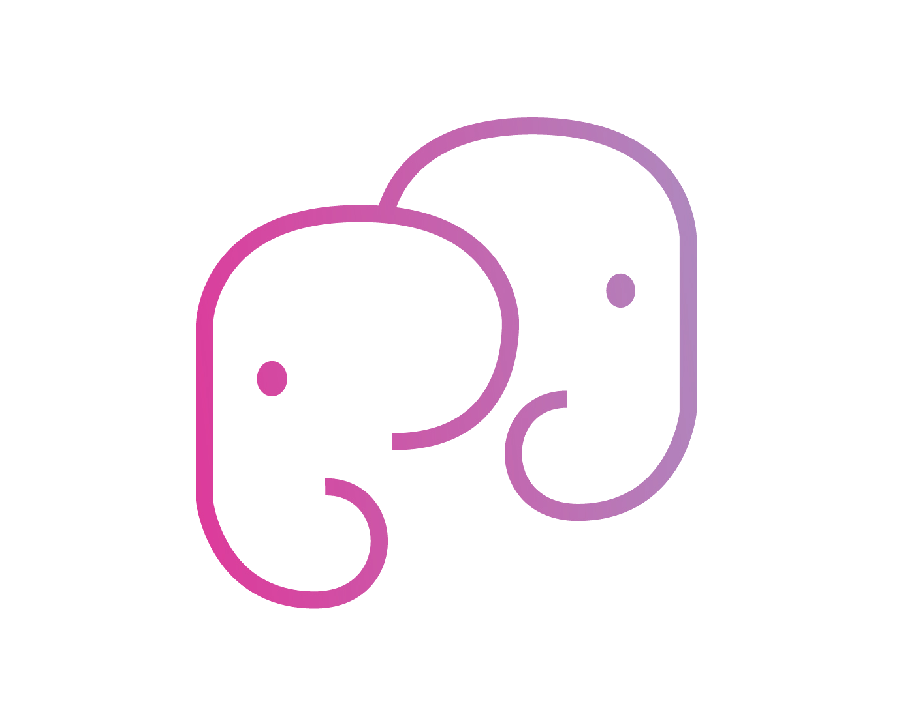

Engineering, surveying, planning & environmental consultancies
A one-month campaign targeting WA project consultancies — engineering, surveying, planning and environmental firms whose senior technical staff are pulled into drafting, formatting and admin.
Campaign at a glance
The Associate carries this campaign for one month and reports achievements at month-end against the targets below. Work the 15 supplied contacts first, then add your own researched targets in the same profile.
Why this industry
The pressure
Clients expect fast, polished project output, while senior technical staff are pulled into drafting, formatting, data clean-up, proposal support and document administration that could be handled elsewhere.
The opportunity
The strongest use case is not replacing professional judgement or Australian sign-off. It is building production support around the technical team — CAD/GIS support, report formatting, QA checklist admin, proposal support, CRM updating and project admin — so they spend more time reviewing, advising and delivering.
Offshore-suitable roles to lead with
Instant Expert
A five-minute brief so you can talk to a engineering & consultancies prospect like someone who understands their world — not a caller reading a script.
The labour market they live in
Engineers, surveyors, GIS analysts and environmental scientists are in short supply across WA, and consultancies compete with government, mining and tier-one firms for the same graduates. Senior technical staff are the scarcest resource of all, which makes it painful when they spend hours on drafting and formatting instead of billable technical work.
Why the admin load hurts
Project delivery is a production line: drafting and take-offs, map preparation, report writing and formatting, QA checklists, tender and proposal documents, data clean-up and project tracking. Much of it is essential but low-leverage, and when it lands on technical staff, utilisation and margin fall while deadlines get tighter.
The pressures shaping their year
Work arrives in deadline-driven peaks tied to approvals, tenders and project milestones. Fixed-fee scopes punish inefficiency, and hard-to-resource peaks force senior staff into production work or overtime. Winning more work means more proposals — more admin — on top of delivery.
Where offshore support fits
Professional judgement and Australian sign-off always stay local. A dedicated offshore resource builds production capacity around the technical team — drafting support, GIS assistance, report formatting, QA admin, proposal support and project tracking — lifting output without changing accountability.
Talk like an insider
Know the language: drafting, mark-ups, take-offs, QA/QC, RFIs, deliverables registers, approvals, referrals, scopes and variations. Know the tools: AutoCAD, Civil 3D, Revit, 12d, ArcGIS/QGIS, Bluebeam, project management systems. Emphasise technical control staying in Australia.
Target profile & selection
Add researched accounts that meet at least four of these signals. Verify size and ownership before adding — the model fits owner-led SMEs.
- 5–50 person engineering, surveying, planning or environmental consultancy
- WA-based or meaningful WA office
- Principal or director-led
- Recurring CAD/GIS, report and tender production
- Recently advertised for drafters, GIS or project admin
- Uses technical tools (AutoCAD, Civil 3D, Revit, 12d, ArcGIS/QGIS, Bluebeam)
- Growth signals: new projects, new disciplines, new offices
- Deadline-driven peaks hard to resource locally
- Visible technical & admin team on LinkedIn
Pursue
- 5–50 person specialist consultancies
- Principal / director-led firms
- Recurring drafting, GIS, report & tender load
- Firms with deadline-driven production peaks
Exclude
- Tier-one multidisciplinary firms with offshore arms
- Practices too small to support a role
- Work requiring Australian professional sign-off (kept local)
- Firms with entrenched offshore production (unless reviewing)
The proposition & angles
Lead with a specific pressure point, not a generic offshore pitch. Match the angle to the person and the trigger.
| Pressure point | Angle to lead with |
|---|---|
| Seniors doing drafting | Offshore CAD/Revit support so engineers review rather than draft. |
| Report formatting overload | Report formatting and document production to free technical time. |
| GIS / mapping backlog | GIS mapping support for figures, data and map preparation. |
| Tender crunch | Proposal and tender documentation support to hit deadlines. |
| Data clean-up drudgery | Data collation and clean-up so analysts analyse, not tidy. |
| Project tracking gaps | Project admin — deliverables registers, RFIs and close-out docs. |
Priority prospect list — 15 supplied
First-pass, public-source targets. Verify in HubSpot, Sales Navigator & Apollo before outreach — confirm contact, size and fit. Names marked "verify" need a confirmed decision maker first.
| Company | Best contact | Why approach |
|---|---|---|
| Hera Engineering | Matteo Tirapelle, Founder and Managing Director | Engineering consultancy with drafting, report production and project administration support potential. |
| JDSi Consulting Engineers | Kevin Bennett, General Manager | WA civil engineering consultancy with design admin, project coordination and document support potential. |
| TABEC Civil Engineering Consultants | Chris Bitmead, Managing Director | Land-development engineering consultancy with design, drafting and project admin support potential. |
| Red Earth Engineering | Symon, Director | Specialist engineering consultancy with technical documentation and project support potential. |
| Preston Consulting | Phil Scott and Catherine Pinchin, Founding Directors | Environmental consultancy with approvals, reporting and project administration support potential. |
| Serling Consulting | Gil, Founding Managing Director | Civil engineering consultancy with design and documentation support potential. |
| Development Engineering Consultants | Steve Allen, Director | Development engineering consultancy with project tracking, design coordination and document support potential. |
| Land Surveys | Ben Westaway, Chief Operating Officer | Surveying and spatial services business with drafting, data and project administration workflows. |
| Western Environmental | Managing Director / Perth Principal to verify | Environmental consultancy with reporting, GIS and approvals support potential. Verify contact. |
| MBS Environmental | Managing Director / Principal Consultant to verify | Environmental consultancy with reporting, data and approvals support potential. Verify contact. |
| Trace Enterprises | Managing Director / General Manager to verify | Integrated heritage, environmental and planning consultancy with document and project support needs. Verify contact. |
| Rapallo | Managing Director / Principal Consultant to verify | Environmental approvals consultancy with report production and admin support potential. Verify contact. |
| Emerge Associates | Tom Atkinson, Principal Environmental Consultant | Environmental and planning consultancy with GIS, ecology and report production support potential. |
| Plexus Engineers | Senior Director / Perth Practice Lead to verify | Building services engineering consultancy with drafting and documentation support potential. Verify contact. |
| 360 Environmental / SLR WA | Tamara Smith, former CEO of 360 Environmental | Environmental consultancy capability in WA with reporting and technical production support potential. |
Buyers & qualification
Multi-thread each account — reach a senior decision maker for authority and an operational person for the felt pain.
Primary decision makers
- Founder · Managing Director
- Principal · Director
- General Manager
Influencers & secondary buyers
- Technical / Discipline Lead
- Project / Design Manager
- Operations / Office Manager
Qualification questions
Use only what you need — the goal is a meeting, not a full diagnosis.
- Can I ask, do your senior technical staff spend time on report production or document formatting?
- Do you have recurring CAD, GIS, proposal or project admin tasks that slow project delivery?
- Are project deadlines creating peaks that are hard to resource locally?
- Do you currently use offshore or remote production support?
Objection handling — engineering & consultancies
| Objection | Response angle |
|---|---|
| “Our work needs professional sign-off.” | Always — sign-off and judgement stay with your Australian team. Offshore support does the drafting, formatting and data prep that leads up to it. Which eats the most senior time? |
| “Quality has to be high.” | Agreed — that's why a dedicated, trained resource inside your standards and QA beats ad-hoc help. You keep review and control; production gets consistent. |
| “We tried offshore drafting before.” | Often a supervision and standards issue. Our managed model trains the person in your tools and templates and covers leave — different from a freelance marketplace. |
| “Deadlines are unpredictable.” | That's the point — steady offshore production capacity absorbs the peaks so seniors aren't dragged into overtime drafting. |
| “IP and data security.” | A fair concern. Managed access, NDAs and work inside your systems — happy to detail the controls with your team. |
| “Send me information.” | Happy to — is it drafting, GIS or report production that hurts most? I'll send the most relevant example. |
First-touch email
Sent from Brainbox / the Commercial Manager with the Industry Insight Article attached. The Associate follows up by phone within a few days.
Small and mid-sized engineering, surveying, planning and environmental consultancies often sit between two pressures. Clients expect fast, polished project output, while senior technical staff are pulled into drafting, formatting, data clean-up, proposal support and document administration that could be handled elsewhere.
Brainbox helps Australian businesses place dedicated offshore personnel through our delivery centre in the Philippines. For project consultancies, the strongest use case is not replacing professional judgement or Australian sign-off. It is building support around the technical team so they can spend more time reviewing, advising and delivering high-value work.
We have attached an Industry Insight Article that examines labour and delivery pressure in this niche. It outlines how offshore CAD support, GIS assistance, report formatting, QA checklist administration, proposal support, CRM updating and project administration can improve capacity without changing professional accountability.
The relevant discussion for [Company] may sit around recurring project bottlenecks. These may include drafting support, map preparation, tender documentation, report production, data collation, project tracking or close-out documentation.
Someone from Brainbox will be reaching out over the next few days to arrange a short meeting with our Commercial Manager. The meeting would explore whether a dedicated offshore support role could help your local team increase output while keeping technical control in Australia.
Kind regards
[Sender Name] · Brainbox
Lead generation call script
A structured prompt to secure a 20-minute meeting for the Commercial Manager — not to sell the service on the call.
Follow-up sequence
First touch opens the door; the follow-ups win the meeting. Each adds a new angle — never resends the same message. Stop the sequence on any reply, opt-out or "do not contact".
| Touch | Purpose |
|---|---|
| 1 · Day 1 | First-touch email + Industry Insight Article (previous page). |
| 2 · Day 2–3 | Phone call using the script; LinkedIn connection request if not already connected. |
| 3 · Day 5 | Value follow-up email — one specific angle from the proposition page. |
| 4 · Day 9 | Second call + short LinkedIn message with a relevant proof point. |
| 5 · Day 14 | Close-the-loop / breakup email — polite, no pressure, easy to reopen. |
| Day 45+ | Move to nurture; revisit on a new trigger (hiring, growth, new work). |
The four-week plan
One month, carried by the Associate. Front-load research and first touches; protect the back half for conversion and booking.
| Focus | What "good" looks like each week |
|---|---|
| Research | Every account verified, tiered and tagged Campaign 04; buyers mapped with a named trigger. |
| Outreach | Personalised first touches with the Insight Article attached; one strong reason per message. |
| Calls | Priority order: warm replies, accepted connections, openers, Tier 1 decision makers. |
| Booking | Two specific times offered; invite sent immediately; handover note in HubSpot for the Commercial Manager. |
Commercial Manager handover note
Complete this in HubSpot for every booked appointment. It is what turns a booking into a converted meeting — the Commercial Manager walks in already knowing the pain, the room and the angle.
| Company & size | |
|---|---|
| Contact, role & who else is in the room | |
| Trigger (why now) | |
| Pain hypothesis | |
| Offshore-suitable roles identified | |
| Recommended angle / entry product | |
| Software & systems in use | |
| Objections raised & responses | |
| "Do not say" / sensitivities | |
| Meeting date, time & format |
Do include
- The exact words the prospect used about their pain
- The specific trigger you found
- One clear recommended entry product
Avoid
- Over-promising scope or pricing
- Vague notes like "keen, wants to chat"
- Booking without confirming the decision maker attends
Monthly targets
The benchmark is appointments held with a good-fit engineering & consultancies prospect, not activity alone.
Engineering & Consultancies — outcomes
Completed by the Associate and reviewed with the sales lead / Marketing Manager at month-end.
| Associate | Month | ||
|---|---|---|---|
| Commercial Manager covered | Reviewed with / date |
Activity & outcomes vs target
| Measure | Target | Actual | Notes |
|---|---|---|---|
| Accounts worked | 40–50 | ||
| First-touch emails sent | 40–50 | ||
| Calls made | 80–120 | ||
| Live conversations | 20–30 | ||
| Warm opportunities created | 10–15 | ||
| Qualified appointments booked | 6–10 | ||
| Appointments held | — | ||
| Opportunities → commercial transaction | — |
Sign-off
| Associate | Sales lead |
|---|